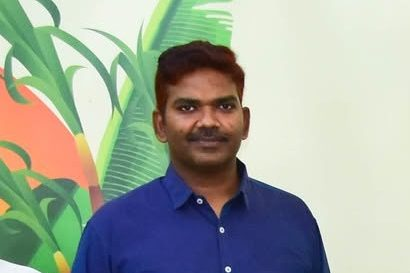
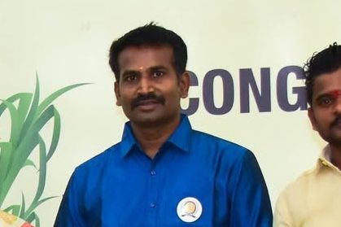
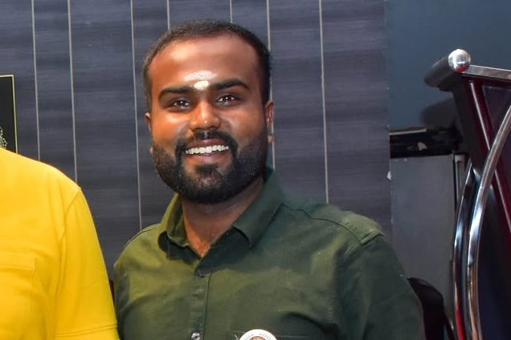
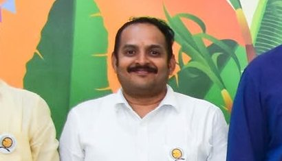
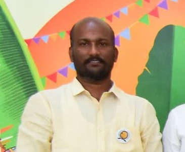
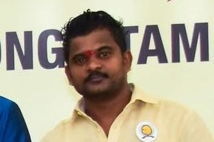

Elected teamதேர்ந்தெடுக்கப்பட்ட குழு

Office Bearers 2026 – 2027நிர்வாகிகள் 2026 – 2027

Mr. Prassanna
Presidentதலைவர்Mrs. Lalitha Yuvaraj
Vice Presidentதுணைத் தலைவர்
Mr. Ilamkumaran
Vice Presidentதுணைத் தலைவர்
Mr. Palaniappan
Secretaryசெயலாளர்
Mr. Babu
Treasurerபொருளாளர்
Mr. Subash
Joint Treasurerதுணைப் பொருளாளர்